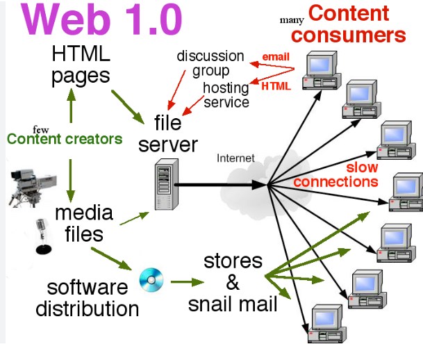

<!DOCTYPE html>
<html lang="en"></html>
<head>
    <meta charset="UTF-8">
    <meta name="viewport" content="width=device-width, initial-scale=1.0">
    <nav>
        <a href="index.html">Home</a>&#65372;
        <a href="www.html">World Wide Web</a>&#65372;
        <a href="tcpip.html">TCP/IP</a>&#65372;
        <a href="http.html">HTTP</a>&#65372;
        <a href="dns.html">DNS</a>&#65372;
        <a href="html.html">HTML</a>&#65372;
        <a href="webserver.html">Web Server</a>&#65372;
        <a href="webbrowser.html">Web Browser</a>&#65372;
        <a href="url.html">Uniform Resource Locator</a>&#65372;
        <a href="intranet.html">Intranet</a>&#65372;
        <a href="extranet.html">Extranet</a>&#65372;
        <a href="ftp.html">File Transfer Protocol</a>&#65372;
        <a href="web1.0.html">Web 1.0</a>&#65372;
        <a href="web2.0.html">Web 2.0</a>&#65372;
        <a href="web3.0.html">Web 3.0</a>&#65372;
        <a href="web4.0.html">Web 4.0</a>&#65372;

    </nav>
    <title>Terminology: Web 1.0</title>
     <style>
        body {
            
            background-color: #fff5f7;
            margin: 0;
            padding: 20px;
        }
        h1{
            color: #c2185b;
            font-size: 30px;
            text-transform: uppercase;
        }
        h2{
            color: #f48fb1;
            font-size: 22px;
            text-transform: uppercase;
            text-decoration: underline;

        }
        p{
            color: #333;
            font-size: 18px;
            line-height: 1.6;
            background-color: beige;
            font-style: italic;
            padding: 10px;
        }
        ul{
            color: #333;
            font-size: 18px;
            line-height: 1.6;
            font-style: italic;
            padding: 10px;
        }
</style>
</head>
<body>
    <h1>Web 1.0</h1>
    <p>
        Web 1.0 refers to the early stage of the World Wide Web, which emerged in the late 1980s and early 1990s. It was characterized by static web pages that were primarily informational and lacked interactivity. During this period, websites were mostly created by individuals or organizations to share information, and users had limited ability to interact with the content.
    </p>
    <p>
        Key features of Web 1.0 include:
        <ul>
            <li><strong>Static Content:</strong> Web pages were static and did not change unless manually updated by the website owner.</li>
            <li><strong>Limited Interactivity:</strong> Users could only view content and had no means to interact with it, such as leaving comments or sharing content.</li>
            <li><strong>Basic HTML:</strong> Websites were built using basic HTML, with limited use of multimedia elements like images and videos.</li>
            <li><strong>Read-Only Experience:</strong> The web was primarily a read-only medium, where users consumed information without contributing to it.</li>
        </ul>
    </p>
    <p>
        Web 1.0 laid the foundation for the development of the internet and paved the way for more dynamic and interactive web experiences that would come with Web 2.0 and beyond.
    </p>
    
    <h2>Transition to Web 2.0</h2>
    <p>
        The transition from Web 1.0 to Web 2.0 marked a significant shift in how the web was used and experienced. Web 2.0, which emerged in the early 2000s, introduced dynamic content, user-generated content, and social media platforms that allowed users to interact with each other and contribute to the web. This evolution transformed the internet from a static information repository to a vibrant and interactive ecosystem. Web 1.0 was the foundation upon which Web 2.0 was built, and it played a crucial role in shaping the early internet landscape.
    </p>        
    <h2>Legacy of Web 1.0</h2>
    <p>
        Although Web 1.0 is often seen as a primitive stage of the internet, it laid the groundwork for the development of more advanced web technologies and applications. Many of the concepts and technologies from Web 1.0, such as HTML and static web pages, are still in use today, albeit in more sophisticated forms. Web 1.0 also set the stage for the rise of e-commerce, online publishing, and the early days of social media, which would become central to the web experience in the years to come.
    </p>
</body>
</html>
